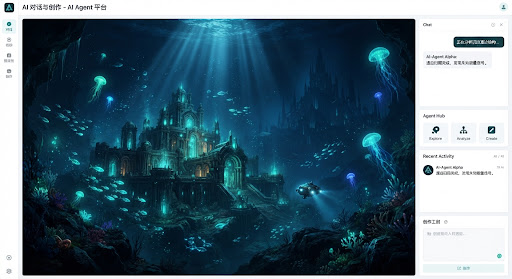
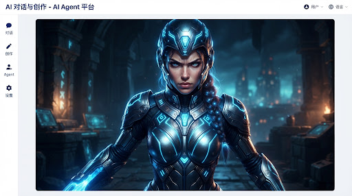
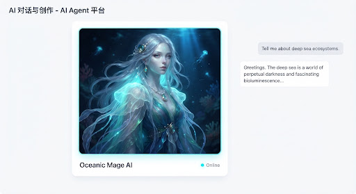
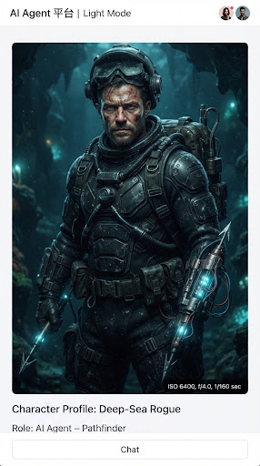

Creative Assistant
Model: GPT-4 Omni
Today, 10:24 AM
Can you generate a moodboard for a futuristic RPG game? Focus on deep ocean aesthetics, bioluminescence, and a dark fantasy vibe.
smart_toy
Cognitive AI
Absolutely. I've started generating the initial visual concepts for the "Dark Ocean RPG" moodboard.
progress_activity
Rendering Visuals
ETA: 12 seconds
Make sure to include character concepts and a color palette.
smart_toy
Cognitive AI
Done! I've updated the canvas with a comprehensive moodboard including character concepts, color palettes, and environmental references. Let me know if you want to tweak the bioluminescent tones.

DARK OCEAN RPG
Conceptual Moodboard v1.0
Character Concepts



Color Scheme
Abyssal Black
#0B132B
Deep Navy
#1C2541
Muted Steel
#3A506B
Bioluminescent Cyan
#5BC0BE
lightbulb Design Notes
Focus on high contrast between the pitch-black environments and the emissive light sources of characters and technology. The aesthetic should feel both ancient and advanced.